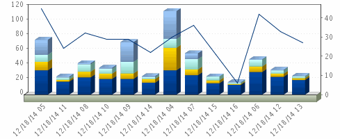
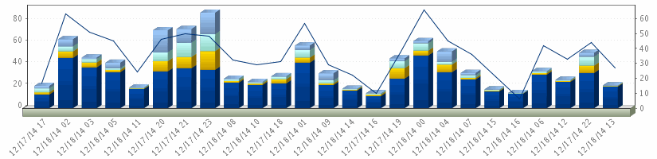
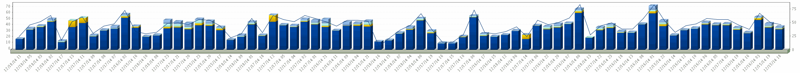

Job Stats vs Number of Tape Drives
Last 12 Hrs
Dec 18, 2014 4:06:00 AM - Dec 18, 2014 4:05:59 PM
Master Server: apt_backup_01
Percentages of Jobs, Clients vs Number of Tape Drives In use

Tape Drives in Use
% Tape Drives in Use
% of Jobs
% of Clients
% of Data Written
Last 24 Hrs
Dec 17, 2014 4:06:00 PM - Dec 18, 2014 4:05:59 PM
Master Server: apt_backup_01
Percentages of Jobs, Clients vs Number of Tape Drives In use

Tape Drives in Use
% Tape Drives in Use
% of Jobs
% of Clients
% of Data Written
Last 72 Hrs
Dec 15, 2014 4:06:00 PM - Dec 18, 2014 4:05:59 PM
Master Server: apt_backup_01
Percentages of Jobs, Clients vs Number of Tape Drives In use

Tape Drives in Use
% Tape Drives in Use
% of Jobs
% of Clients
% of Data Written
Copyright © 2003-2014
APTARE, Inc.
1359 Dell Avenue, Campbell, California 95008, USA - Phone: +1 408.871.9848 |
Privacy Policy